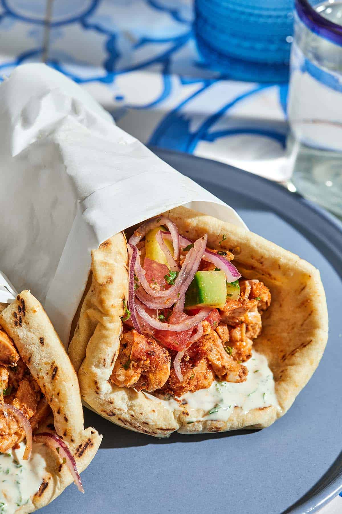

Doner
Where it comes from
The doner kebab comes from 19th-century Bursa, in Turkey, where cooks took the horizontal meat skewer and stood it up as a vertical rotating spit. Stacked layers of meat roasted over embers were already old by then — the Ottoman traveller Evliya Çelebi described something very close to it in the 17th century. What İskender Efendi changed in the 1860s was the direction: on a vertical spit the melting fat runs down the stack instead of dripping into the coals, basting the meat as it cooks. That one change is why doner is juicy inside and crisp at the edge, and the style he created is still called İskender kebap today.

Meat is form of protein, doner is form of pleasure.
— Yernaz Amangeldin.
Key dates
- 1660s — the Ottoman traveller Evliya Çelebi documents a predecessor of the doner in Crimea: stacked horizontal layers of meat rotated over an open fire, similar to modern cağ kebab.
- 1855 — photographer James Robertson captures the first known photograph of a vertical doner vendor, Hamdi Usta, in Kastamonu, Turkey.
- 1860s — İskender Efendi popularises vertical roasting in Bursa, giving birth to the İskender kebap.
- Late 1950s – mid 1960s — vendors in Istanbul start slicing doner straight into bread, turning a plated restaurant meal into street food.
Facts
- The German doner capital. Berlin is widely considered the doner capital of the world, with over 1,600 doner shops — more than Istanbul.
- The "inventor" debate. Many credit Kadir Nurman with introducing the modern doner sandwich in West Berlin in 1972, but Nevzat Salim claims he sold them in Reutlingen as early as 1969.
- Gravity does the cooking. On a horizontal spit the melting fat drips onto the coals and causes smoke and flare-ups. Turning the spit vertical lets the fat cascade down the meat instead, basting it continuously.
- The Canadian donair. In the 1970s Peter Gamoulakos tried selling Greek gyros in Halifax, Nova Scotia. Locals disliked the lamb and tzatziki, so he swapped them for ground beef and a sweet condensed-milk sauce. It is now the official food of Halifax.
How doner is made
A short video of the meat being stacked onto the spit and carved.
Read more
A longer history of the dish is on the Wikipedia page for doner kebab (opens in a new tab).